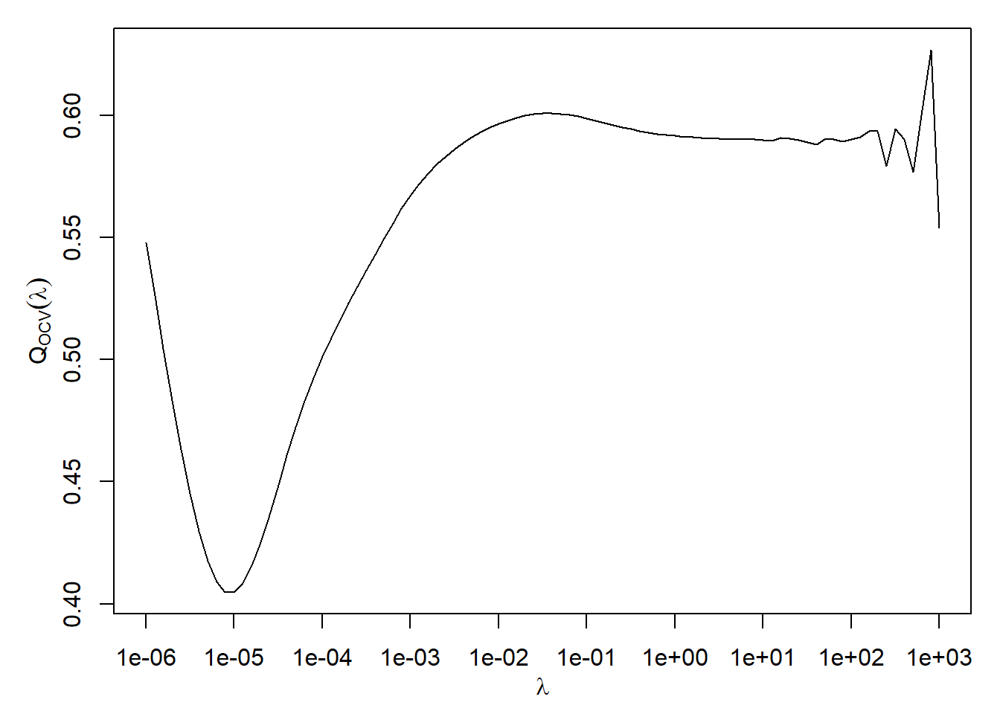

5 Choosing the Smoothing Parameter
\[ \def\b#1{\mathbf{#1}} \]
5.1 Overview
Suppose we are given data \(D=\{(t_i,y_i),\,i=1,\ldots,n\}\) and that our model is: \[ y_i = f(t_i) + \epsilon_i,\qquad \epsilon_i\sim\text{N}(0,\sigma^2) \tag{5.1}\] where the \(\epsilon_i\) are i.i.d. \(\sim\text{N}(0,\sigma^2)\) and \(f(t)\) is assumed to be smooth. Given knot positions \(\{t_i,\; i=1,\dots,n\}\), we can estimate \(f(t)\) with a smoothing spline \(\hat{f}_\lambda(t)\).
How then should we choose the value of the smoothing parameter \(\lambda\)? By setting \(\lambda \rightarrow 0\), we obtain exactly the interpolating spline \(\hat{f}_0(t)\) and a perfect fit to the data. However, this tends to overfit the data: applying it to to a new sample of data where model Equation 5.1 still applies would produce a poor fit. Conversely, by setting \(\lambda \rightarrow \infty\), we get: \[\begin{align*}
f_\infty(t) &=
\begin{cases} \hat{a}_0, & \nu=1,\ p=1\\
\hat{a}_0 + \hat{a}_1 t, & \nu=2,\ p=3.
\end{cases}
\end{align*}\] Here, \(\hat{a}_0=\bar{y}\), for the \(\nu=1, p=1\) case, and \(\{\hat{a}_0,\ \hat{a}_1\}\), for the \(v=2, p=3\) case, are the OLS linear regression parameters.
If the true \(f(t)\) was constant or linear, this solution would be reasonable, but often we are interested in less regular functions.
5.2 Test/training approach
One way to approach estimation of \(\lambda\) is to partition the set of indices \(I= \{1,\dots,n\}\) into two subsets \(I_1\) and \(I_2\), where \(I_1\cup I_2 = S\) and \(I_1 \cap I_2 = \phi\). Thus we obtain two datasets:
- Training dataset: \(D_1 = \{(t_{i},y_{i}),\ i\in I_1\}\),
- Test dataset: \(D_2 = \{(t_{i},y_{i}),\ i\in I_2\}\).
We fit a smoothing spline \(\hat{f}_{\lambda,I_1}(t)\) to the training dataset, and judge the quality of the fit using the test dataset: \[\begin{align*} Q_{I_1:I_2}(\lambda) &= \sum_{i\in I_2} \left(y_i - \hat{f}_{\lambda,I_1}(t_i)\right)^2. \end{align*}\] We choose \(\lambda\) to minimise \(Q_{I_1:I_2}(\lambda)\). Many algorithms exist for such minimisation, for example through evaluation on a fine grid of \(\lambda\) values, although many more computationally efficient algorithms exist.
5.3 Cross-validation or leave-one-out
This is an extreme form of the above principle. The test dataset \(D_2\) comprises a single observation, \((t_{j},y_{j})\), for a given value of \(j\). The training set \(D_1\) is then \(D_{-j} = \{(t_{i},y_{i}),\ i \in I_{-j}\}\), where \(I_{-j}\) denotes the full set \(S\) excluding \(j\). Then in a slightly amended notation we can write \[\begin{equation*} Q_{-j:j}(\lambda) = \left(y_j - \hat{f}_{\lambda,-j}(t_j)\right)^2 \end{equation*}\] to assess the quality of fit. Of course, \(j\) is arbitrary, so we repeat this process for each \(j\in\{1,\dots,n\}\) then average the assessments to form the ordinary cross-validation criterion: \[\begin{equation}\label{eq:CV} Q_{OCV}(\lambda) = \frac{1}{n} \sum_{j=1}^n \left(y_j - \hat{f}_{\lambda,-j}(t_j)\right)^2. \end{equation}\] We then choose the value \(\hat{\lambda}\) which minimizes \(Q_{OCV}(\lambda)\). Hopefully, a plot of \(Q_{OCV}(\lambda)\) will appear as in Figure 5.1, but there is no theoretical guarantee that this curve will have a unique turning point, making it difficult to locate the minimum.